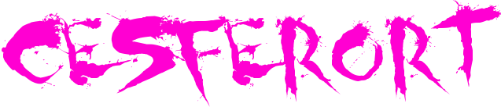

César Ferreiro. Online,

Software by day. What is here gets the hours that are left.
Each project has its own site, with what it is and how it treats your data. This page only exists so you can find them all from one place.
IRATXO
A focus app for Android. You choose how long you are going to work, the Iratxos head out on an expedition, and the village grows with what they bring back. No account, no ads, no server.
Visit the siteWishwell for Steam
A free Chrome extension that turns the Steam wishlist into a much sharper one: deals from other stores if you paste a free key, how long each game takes and whether it runs on Steam Deck, all in the same panel. And plenty more.
Visit the siteAn unannounced FPS
Years in, with years to go. When there is something worth showing, it will be here under its own name.
No page yetWhere I talk about it
I post what I am building on YouTube, and the code I can show is on GitHub.
Who is behind all this: about me.